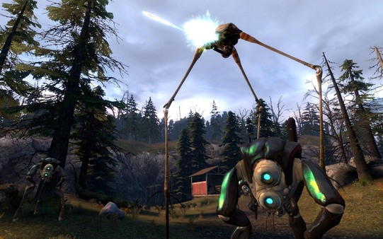

Gallery


Half Life 2: Episode 2 (2007) is the second game in the episodic Half Life format which Valve abandoned after this games release. After the release of this game, fans would have to wait 12 years until the release of the next game in the franchise in 2020.
Review
Half Life 2: Episode 2 is the fourth game in the Half Life series, which helped create the modern game standard. Half Life 2: Episode 2 mainly excels at where its predecessor, Half Life 2: Episode 1, Failed.
The game features the player piloting the savior of humanity, Gordon Freeman PHD, carving his way through the wilds beyond the obliterated City 17 in order to get to the White Forest Resistance Base and launch a rocket that would stop the raging portal storms across the area in the aftermath of the previous games.
Half Life 2: Episode 2 improves the combat pacing and mechanics from the previous games, and adds a lot of new content and enemies for you to contend with. While playing the game, you will see the story deepening and expanding not unlike the other games, however, if you were to make it to White Forest, an exciting suprise would be awaiting you with a tie in to a previous Valve title.
This game was the latest in the Half Life fanchise for a long time and therefore its ending was allowed to simmer in the minds of devoted fans, which were wondering how to series could continue and evolve.
Reviews
| Reviewer | Score |
|---|---|
| IGN | 9.4/10 |
| Steam Reviews | 97% |
| Metacritic | 90/100 |
| GamesRadar | 4.5/5 |
| Eurogamer | 9/10 |
Gallery
Videos
{kind=link}